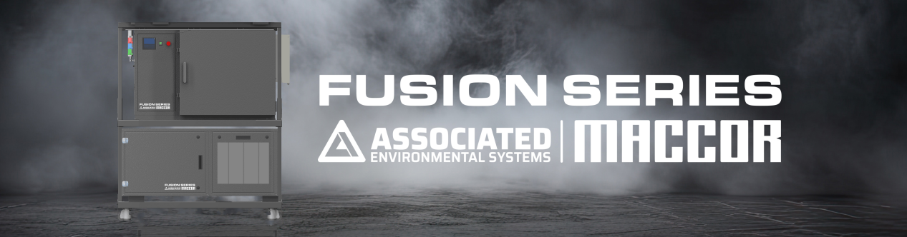
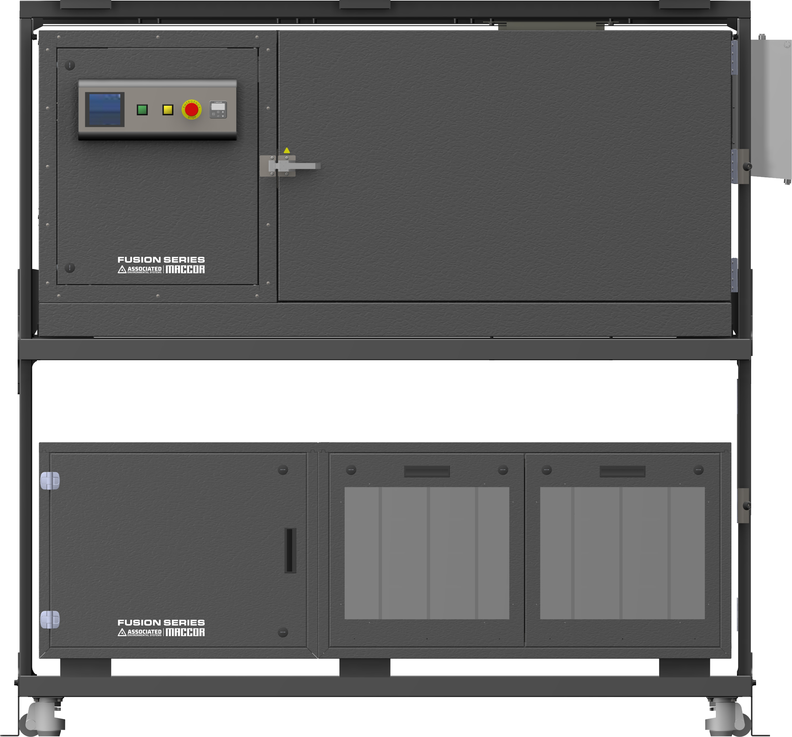
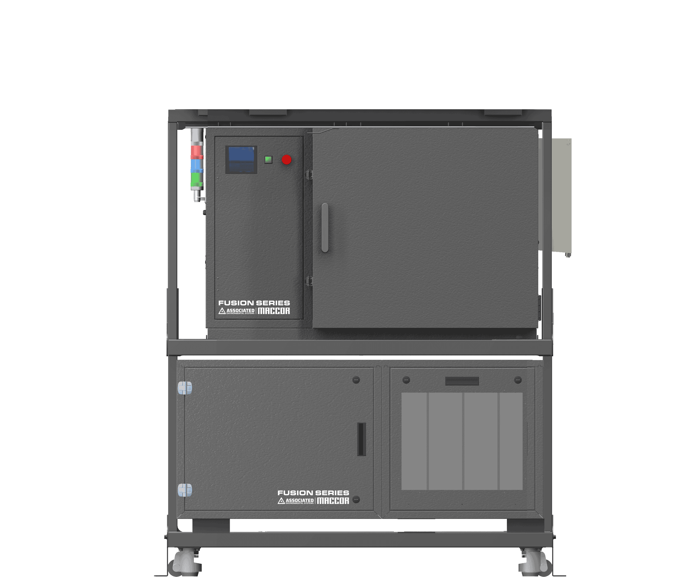

FUSION Integrated
Test Systems
Pre-configured with MACCOR cyclers and AES chambers, these systems arrive turnkey, with controls that work together from day one.
Eliminate integration. Accelerate Testing.
Traditional battery testing systems require weeks of on-site integration, compatibility troubleshooting, and control programming. FUSION changes that. Every system is pre-integrated, validated, and ready for immediate deployment.
MACCOR battery cycler with specified current/voltage capabilities
AES environmental chamber with precise temperature control
Pre-wired interconnect cables and pass-throughs
Integrated safety systems and unified control software
Battery fixtures configured for your cell format
Data acquisition and monitoring systems
One System. No Integration Headaches.
Traditional battery test lab buildouts require sourcing a cycler from one vendor, a thermal chamber from another, safety hardware from a third — then paying a systems integrator to make it all work together. That process takes months, involves multiple support contracts, and introduces compatibility risk at every interface.
FUSION changes the equation. Our pre-validated integrated systems arrive as a single, tested unit — cycler, chamber, and safety controls designed to work together from day one. One purchase order, one vendor, one support contact. Deploy in days and start generating data immediately.
What's Integrated
- Battery Cycler — Maccor Series hardware, pre-configured
- Thermal Chamber — validated partner chamber, pre-wired
- Safety Controls — emergency stop, smoke/gas detection, venting
- Control Software — unified MacTest32 interface
- Data Infrastructure — network-ready from day one
- Safety Interlocks — all hardware-level protections pre-tested
FUSION Advantages
- Single purchase order & invoice
- Factory acceptance tested before shipment
- Documentation package included
- Installation support available
Traditional Lab vs. FUSION
See how FUSION eliminates the friction of conventional battery lab builds.
Traditional Approach
- Multiple vendors, multiple POs
- Months of integration work
- Compatibility risk at every interface
- Weeks to first data
FUSION Systems
- Single purchase order
- Pre-validated at the factory
- All interfaces tested & certified
- Deploy in days
FUSION System Capabilities
| Component | Capability | Notes |
|---|---|---|
| Cycler Platform | Maccor Series (configurable) | Series 4000, 6000, or 6500 base |
| Thermal Chamber | Pre-integrated partner chamber | Temperature range per application |
| Safety Controls | Hardware-level interlocks | Emergency stop, gas/smoke, venting |
| Control Interface | Unified MacTest32 | Single software for all subsystems |
| Factory Testing | Full FAT included | Documented acceptance test |
| Deployment Timeline | Days vs. months | Compared to DIY integration |

Single-chamber design optimized for high-power testing.
- 200-400A per channel, scalable to 16 channels
- One 12 cu-ft SC-512-4-SAFE chambers for large-format testing
- Energy-efficient design with 90% return-to-grid
- Well-suited for pilot lines and automotive module validation

Ultra-dense channel system for high-volume cell testing.
- 192 channels at 1A max current each
- Four current ranges down to 5µA resolution
- Fast response time under 100µs for precision cycling
- Designed for consumer cells, wearables, and electronics R&D
Flexible mid-range system with versatile current control.
- 64 channels at 15A max current each
- Four current ranges down to 30µA resolution
- Sub-100µs rise time for accurate measurements
- Covers both small-cell testing and compact module work
Who Uses FUSION
New Lab Buildouts
Launch a full-capability battery test lab without the months-long integration project. FUSION gets you from receiving dock to first test in days.
EV & Energy Storage Testing
High-power module and pack testing in a controlled thermal environment — critical for realistic drive cycle and abuse testing under temperature.
Contract Test Labs
CROs and contract labs that need to scale capacity quickly and deliver consistent, documented results to multiple customers.
University & National Labs
Research institutions that need professional-grade capability without dedicated integration engineering resources.
Ready for a Turnkey Test System?
Tell us your application, channel count, and thermal requirements — we'll configure the right FUSION system and get you a quote.